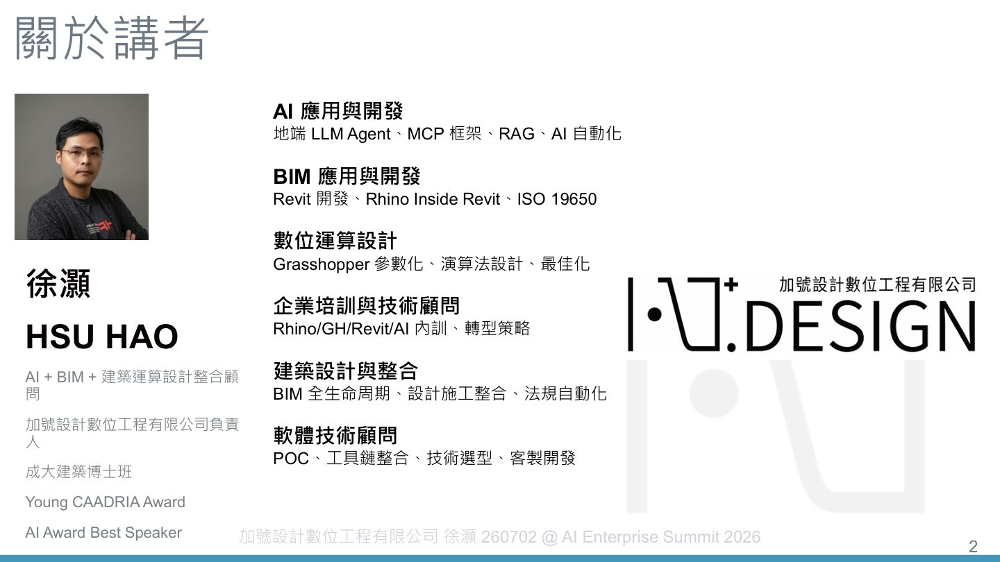
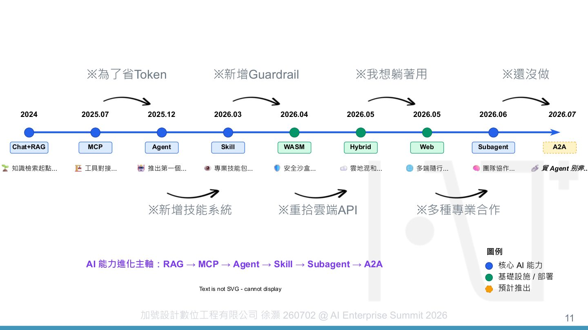
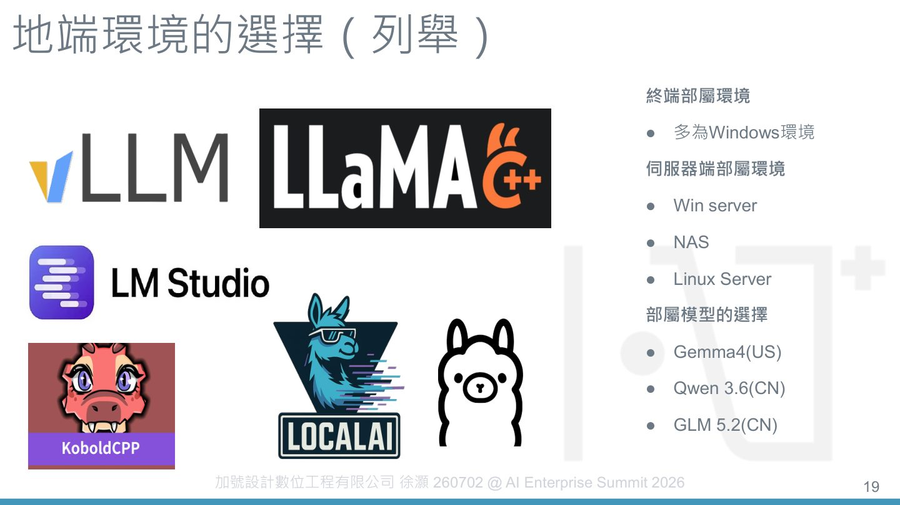

摘要
本演講深入探討建築營造（AEC）產業面對高工時、經驗流失與培訓週期長等痛點，如何自研雲地混合 AI Agent 以活化企業知識庫。講者徐灝梳理了自 2024 年 Chat+RAG 到 2026 年 Subagent 與 A2A 的技術演進歷程，並分享 8 個實務場景（如新人培訓、Revit 物件定位、無障礙樓梯模型自動檢核）。在技術架構上，講者分析了雲端「能力」與地端「自主」的權衡，提出結合 RAPTOR 混合檢索技術，將知識庫輸出為具階層關係的 JSON 結構以利推理。此外，演講分享了關鍵選型原則：高可控任務走 RPA，高變化任務走 MCP，或將 RPA 包裝成工具供 Agent 呼叫。最終建議採取混用策略，由地端模型（如 Qwen、GLM）處理 80% 的敏感與低延遲任務，高推理複雜度的脫敏任務則上傳雲端旗艦模型，兼顧資料隱私與算力效能。
重點整理
- AEC產業因業務產出資料樣態雜亂、缺乏系統性內化，形成「人留不住、經驗留不住、缺乏內化」的惡性循環
- 產業調查顯示51.3%企業仍以數位資料（模型或圖檔）人工傳遞知識與經驗，僅9.1%使用知識庫或PMIS專管系統，1.1%已使用AI代理人
- 自研Agent的能力演進路徑：2024年Chat+RAG、2025.07 MCP、2025.12 Agent、2026.03 Skill、2026.04 WASM沙盒、2026.05雲地混合(Hybrid)與多端隨行(Web)、2026.06 Subagent、2026.07 A2A（尚未完成）
- 地端部署經驗顯示：雲端代表「能力」（租借最強大運算資源與模型），地端代表「自主」（資料所有權、系統控制權與執行私密性），但地端模型（如GLM 5.2）在推論效能上仍與雲端旗艦模型有落差
- 建議依任務類型選擇開發方向：需要可控可檢核走RPA、可接受變化性走MCP、想兼顧兩者則把RPA包裝成工具讓Agent呼叫；並採地端模型處理80%日常/低延遲/敏感任務、雲端大模型處理高複雜度推論的混用策略
重點圖片／架構圖



建築營造產業的結構性困境
講者指出AEC產業具有高工時低報酬、高度人力密集、培訓週期長、同一業務在不同地區的know-how也可能不同、非常仰賴個人經驗等特性。由於業務產出的資料樣態太雜、缺乏系統性內化，新人想問卻不知從何問起，又缺乏資深人員能帶領，導致人才流失、專案經驗也隨之流失，形成持續缺乏內化機制的惡性循環。調查也顯示，企業目前最常用來傳遞知識與經驗的方式仍是數位資料人工傳遞（51.3%）、紙本文件手動傳遞（19.3%）與口頭交接（17%），僅9.1%採用知識庫或PMIS專管系統。
雲地混合Agent的能力演進與應用情境
講者自研的AI能力沿著RAG（2024）、MCP（2025.07）、Agent（2025.12）、Skill（2026.03）、WASM沙盒（2026.04）、雲地混合Hybrid與多端隨行Web（2026.05）、Subagent（2026.06）到A2A（2026.07，尚未完成）逐步演進。演講展示8個實務應用情境，涵蓋協助新人釐清流程以解放資深人員諮詢成本、以RAG建立個人或企業知識庫取代傳統文件交接、使用Skill明確指示Agent查詢方式（如淨高檢討）、依任務選擇不同Agent、以自動排程完成例行任務（如每天下班前寫日報）、透過知識庫搭配MCP讓非專業人員也能查詢或定位Revit物件，以及運用Agent協助無障礙樓梯檢核與依BEP、IPP等指引進行命名規則、顏色等模型檢核。
地端部屬的坑：雲端與地端的取捨
講者將雲端定位為「能力」，代表可租借全球最強大的運算資源與模型（如GPT-5.5、Claude 4.8），無須擁有昂貴硬體即可調用最尖端的智慧成果；地端則定位為「自主」，代表數據所有權、系統控制權與執行私密性，確保機密資產在物理上不離開防火牆，並可進行深度客製化（微調、注入專屬知識、開發專屬Skill）而不受雲端API規範或Token限制。地端環境的選擇包括終端多為Windows環境、伺服器端可選Windows Server、NAS或Linux Server，並列舉Gemma、Qwen 3.6、GLM 5.2等可部署的地端模型，但講者也以GLM 5.2為例說明「相愛沒那麼容易」，地端模型與雲端旗艦模型之間仍存在落差。
Key Takeaway：知識庫設計與任務類型判斷
講者建議RAG可搭配混合檢索（例如RAPTOR），將知識輸出為具階層關係的JSON結構，每個節點記錄主題摘要、子節點與內容，以利於後續檢索與推理。針對任務類型的選擇，講者提出三種取向：若需要產出可控、可檢核，應採用規則式的RPA；若產出不需固定、可接受推論帶來的變化，則可採用MCP；若同時想要可控又想要省力，可將RPA包裝成一堆工具，交由Agent自行按鈕呼叫。核心精神是把計算交給程式、把推論交給LLM。
混用策略：地端處理日常任務、雲端處理高複雜度推論
講者最終建議不需堅持純地端部署，而是採取混用策略：地端模型可處理約80%的日常、敏感性與低延遲任務，例如個資去識別化與初步摘要；當遇到需要極高推理複雜度或跨領域知識的任務時，再將「脫敏後」的內容上傳雲端大模型處理。這樣的混合部署方式，讓建築營造產業既能保有資料自主性，也能在複雜任務上借助雲端模型的能力。